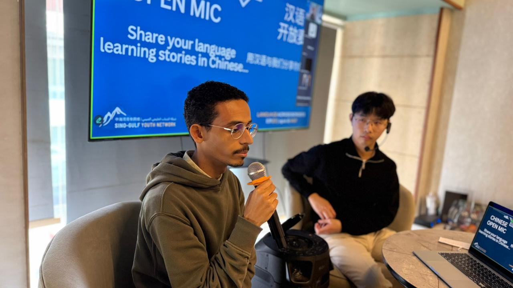

Each session pairs a guest talk — delivered entirely in Mandarin or Arabic — with ice-breakers and open exchange between native and non-native speakers. Started online across continents; now also in person, beginning with Saudi Arabia in early 2026.
